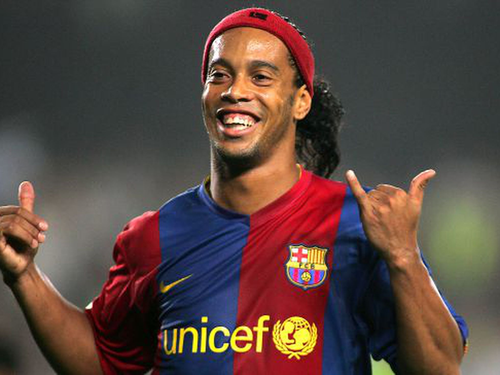
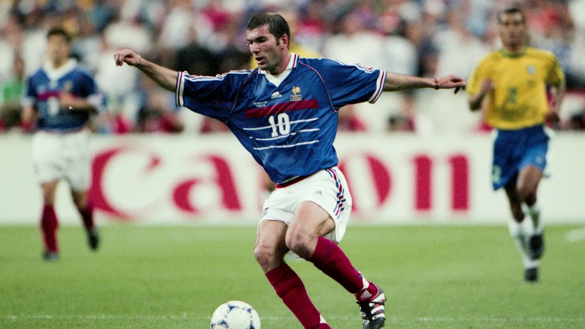
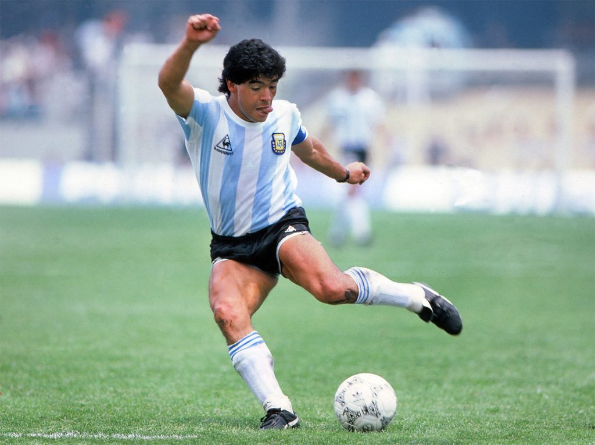

Le football est un sport collectif joué entre deux équipes de onze joueurs (un gardien et dix joueurs de champ) avec un ballon sphérique. Appelé « soccer » en Amérique du Nord, il est pratiqué par 250 millions de joueurs dans plus de 200 pays, ce qui en fait le sport le plus populaire au monde. Il se joue sur un terrain rectangulaire, généralement gazonné, avec un but à chaque extrémité. L’objectif est de marquer en plaçant le ballon dans le but adverse.
Les racines que ce sport partage avec d'autres jeux de « football » remontent au Moyen Âge. Il est l'héritier de la soule médiévale, pratiqué notamment dans le Nord-Ouest de la France et dans les Îles Britanniques, t du Calcio florentin, des jeux caractérisés par leur violence et leur peu de règles.
C'est un classement personnel qui ne comprend pas les joueurs encore en activité, raison pour laquelle Cristiano Ronaldo et Lionel Messi n'y figure pas.
1. Ronaldo de Assis Moreira, ce qui était le plus fou avec Roni, c'est qu'il ne s'entrainais quasiment jamais, il arrivait aux match, aux entrainements en sortant de boîte de nuit, de soirées, et ils cassaient les reins de tout le monde. Mais évidement comme le grand Eto'o a dit, quand un joueur ne s'entraine pas, ça paye "cash", ainsi il n'a pu être à son prime qu'en moyenne 5 ans, (ses 5ans à Barcelone) après il a eu son déclin. Mais durant ces 5 années en catalogne il a marqué l'histoire pour toujours.
Zidane, notre Zizou national, le plus impressionant avec Zinédine c'est qu'il étais très lent, mais associé à une technique plus que spectaculaire la vitesse n'étais même plus nécessaire. Lorsque l'on regardait Zidane joué le football semblait si simple.
Diego Maradona, connu pour son but contre l'Angleterre en quart de final de coupe du monde 1986 aussi appelé "la main de Dieu", Diego était un joeueur spectaculaire qui a marqué l'histoire du foot tant en club avec Naple ou mais également en sélection avec l'Argentine, ce genre de joueur où tout semblait facile.
